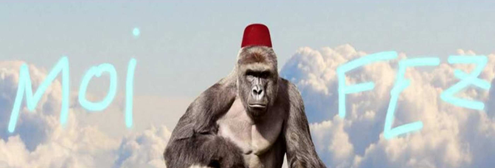
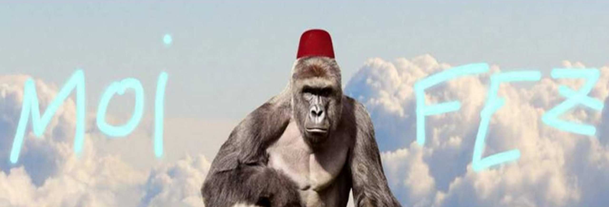
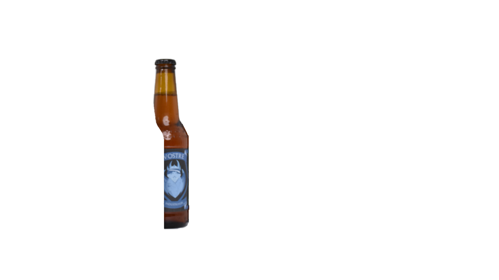
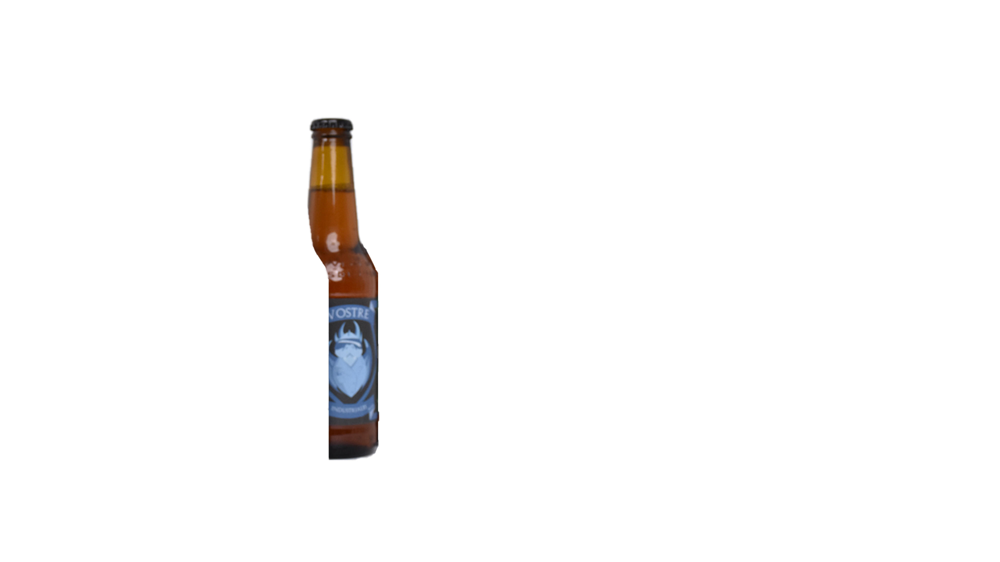
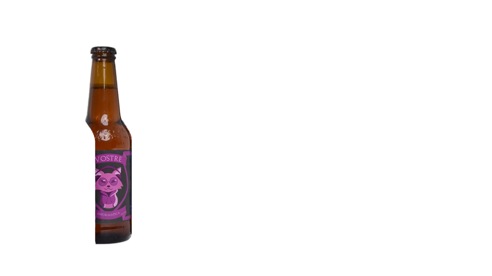
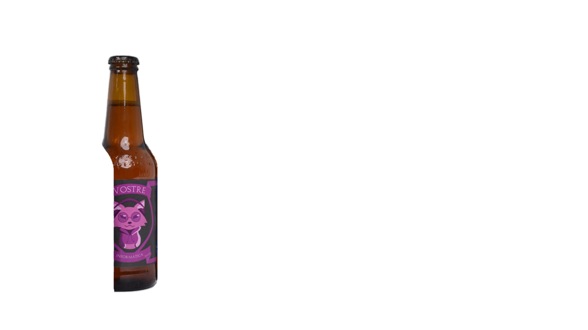

Título del proyecto
Subtítulo del proyecto

Perchero Hira
Diseño y comunicación por encargo de un perchero para la empresa Valenciana de mobiliario Systemtronic.

Etiquetado para vinos Nostre
Proyecto de branding galardonado por la Escuela de Agronomía y seleccionado para ser la imagen de sus vinos.
"Reflejos del Multiverso"
Campaña gráfica multiplataforma hecha por encargo para la obra de teatro "Reflejos del Multiverso".
Perchero Hira
Diseño y comunicación por encargo de un perchero para la empresa Valenciana de mobiliario Systemtronic.
Etiquetado para vinos Nostre
Proyecto de branding galardonado por la Escuela de Agronomía y seleccionado para ser la imagen de sus vinos.
¿Qué puedo hacer por ti?
Diseño Gráfico
Desarrollo Web
Edición de Vídeo
Gráficos Móviles
Comunicación de Proyectos
Ilustración
En toda Valencia no encontrarás un diseñador con un perfil más completo. El abanico de servicios que ofrezco, todos ellos ejemplificados en mi galería de proyectos, cubre cualquier necesidad que pueda surgir durante el desarrollo de una campaña gráfica. Diseño gráfico, desarrollo web, edición de vídeo, gráficos móviles, ilustración… Sea cual sea tu proyecto, yo puedo darle cara mejor que nadie.
¿Quieres ver una muestra de mi trabajo? ¡Pásate por mi galería de proyectos, o descarga mi currículum!
 



Colaboradores y clientes
He colaborado con empresas, instituciones y creadores de contenido para desarrollar campañas, piezas editoriales, identidad visual y material promocional. Aporto ideas, método y ejecución en cada fase del proyecto, adaptándome a la escala y objetivos de cada cliente.


 

 
